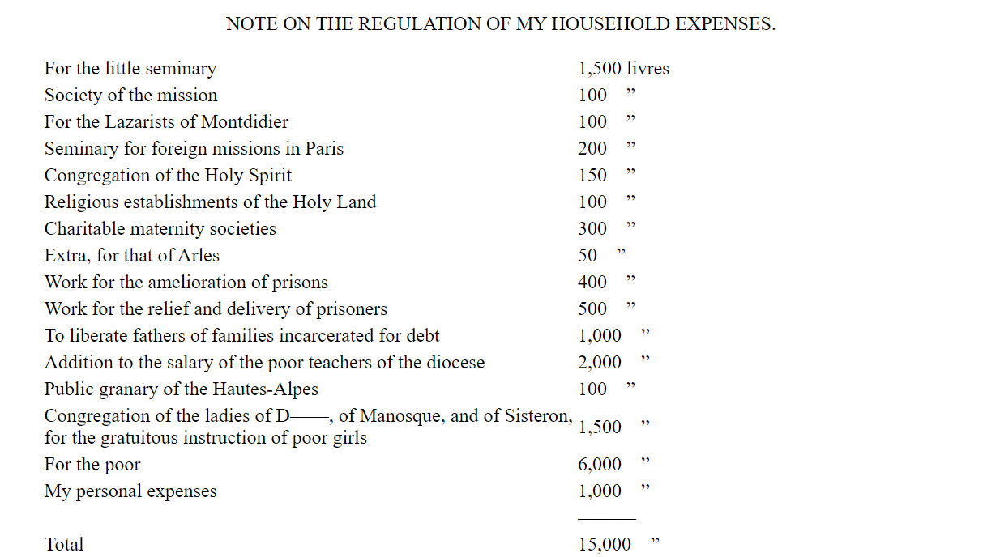
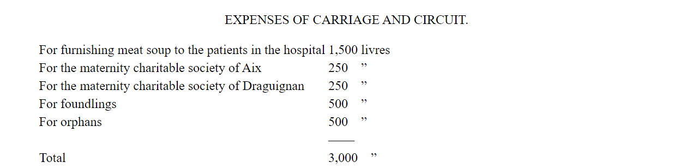

Heres a story from Project Gutenberg top 100
LES MISÉRABLES
By Victor Hugo
Trnaslated by isabel F.Hapgood
Thomas Y. Crowell & Co.
No. 13, Astor Place
New York
So long as there shall exist, by virtue of law and custom, decrees of damnation pronounced by society, artificially creating hells amid the civilization of earth, and adding the element of human fate to divine destiny; so long as the three great problems of the century—the degradation of man through pauperism, the corruption of woman through hunger, the crippling of children through lack of light—are unsolved; so long as social asphyxia is possible in any part of the world;—in other words, and with a still wider significance, so long as ignorance and poverty exist on earth, books of the nature of Les Misérables cannot fail to be of use. HAUTEVILLE HOUSE, 1862.
VOLUME 1 FANTINE
FIRST BOOK---JUST A MAN
CHAPTER 1---M. MYRIEL
In 1815, M. Charles-François-Bienvenu Myriel was Bishop of D—— He was an old man of about seventy-five years of age; he had occupied the see of D—— since 1806.
Although this detail has no connection whatever with the real substance of what we are about to relate, it will not be superfluous, if merely for the sake of exactness in all points, to mention here the various rumors and remarks which had been in circulation about him from the very moment when he arrived in the diocese. True or false, that which is said of men often occupies as important a place in their lives, and above all in their destinies, as that which they do. M. Myriel was the son of a councillor of the Parliament of Aix; hence he belonged to the nobility of the bar. It was said that his father, destining him to be the heir of his own post, had married him at a very early age, eighteen or twenty, in accordance with a custom which is rather widely prevalent in parliamentary families. In spite of this marriage, however, it was said that Charles Myriel created a great deal of talk. He was well formed, though rather short in stature, elegant, graceful, intelligent; the whole of the first portion of his life had been devoted to the world and to gallantry.
The Revolution came; events succeeded each other with precipitation; the parliamentary families, decimated, pursued, hunted down, were dispersed. M. Charles Myriel emigrated to Italy at the very beginning of the Revolution. There his wife died of a malady of the chest, from which she had long suffered. He had no children. What took place next in the fate of M. Myriel? The ruin of the French society of the olden days, the fall of his own family, the tragic spectacles of ’93, which were, perhaps, even more alarming to the emigrants who viewed them from a distance, with the magnifying powers of terror,—did these cause the ideas of renunciation and solitude to germinate in him? Was he, in the midst of these distractions, these affections which absorbed his life, suddenly smitten with one of those mysterious and terrible blows which sometimes overwhelm, by striking to his heart, a man whom public catastrophes would not shake, by striking at his existence and his fortune? No one could have told: all that was known was, that when he returned from Italy he was a priest.
In 1804, M. Myriel was the Curé of B—— [Brignolles]. He was already advanced in years, and lived in a very retired manner.
About the epoch of the coronation, some petty affair connected with his curacy—just what, is not precisely known—took him to Paris. Among other powerful persons to whom he went to solicit aid for his parishioners was M. le Cardinal Fesch. One day, when the Emperor had come to visit his uncle, the worthy Curé, who was waiting in the anteroom, found himself present when His Majesty passed. Napoleon, on finding himself observed with a certain curiosity by this old man, turned round and said abruptly:—
“Who is this good man who is staring at me?”
“Sire,” said M. Myriel, “you are looking at a good man, and I at a great man. Each of us can profit by it.”
That very evening, the Emperor asked the Cardinal the name of the Curé, and some time afterwards M. Myriel was utterly astonished to learn that he had been appointed Bishop of D——
What truth was there, after all, in the stories which were invented as to the early portion of M. Myriel’s life? No one knew. Very few families had been acquainted with the Myriel family before the Revolution.
M. Myriel had to undergo the fate of every newcomer in a little town, where there are many mouths which talk, and very few heads which think. He was obliged to undergo it although he was a bishop, and because he was a bishop. But after all, the rumors with which his name was connected were rumors only,—noise, sayings, words; less than words—palabres, as the energetic language of the South expresses it.
However that may be, after nine years of episcopal power and of residence in D——, all the stories and subjects of conversation which engross petty towns and petty people at the outset had fallen into profound oblivion. No one would have dared to mention them; no one would have dared to recall them.
M. Myriel had arrived at D—— accompanied by an elderly spinster, Mademoiselle Baptistine, who was his sister, and ten years his junior.
Their only domestic was a female servant of the same age as Mademoiselle Baptistine, and named Madame Magloire, who, after having been the servant of M. le Curé, now assumed the double title of maid to Mademoiselle and housekeeper to Monseigneur.
Mademoiselle Baptistine was a long, pale, thin, gentle creature; she realized the ideal expressed by the word “respectable”; for it seems that a woman must needs be a mother in order to be venerable. She had never been pretty; her whole life, which had been nothing but a succession of holy deeds, had finally conferred upon her a sort of pallor and transparency; and as she advanced in years she had acquired what may be called the beauty of goodness. What had been leanness in her youth had become transparency in her maturity; and this diaphaneity allowed the angel to be seen. She was a soul rather than a virgin. Her person seemed made of a shadow; there was hardly sufficient body to provide for sex; a little matter enclosing a light; large eyes forever drooping;—a mere pretext for a soul’s remaining on the earth.
Madame Magloire was a little, fat, white old woman, corpulent and bustling; always out of breath,—in the first place, because of her activity, and in the next, because of her asthma.
On his arrival, M. Myriel was installed in the episcopal palace with the honors required by the Imperial decrees, which class a bishop immediately after a major-general. The mayor and the president paid the first call on him, and he, in turn, paid the first call on the general and the prefect.
The installation over, the town waited to see its bishop at work.
CHAPTER 2—M. MYRIEL BECOMES M. WELCOME
The episcopal palace of D—— adjoins the hospital.
The episcopal palace was a huge and beautiful house, built of stone at the beginning of the last century by M. Henri Puget, Doctor of Theology of the Faculty of Paris, Abbé of Simore, who had been Bishop of D—— in 1712. This palace was a genuine seignorial residence. Everything about it had a grand air,—the apartments of the Bishop, the drawing-rooms, the chambers, the principal courtyard, which was very large, with walks encircling it under arcades in the old Florentine fashion, and gardens planted with magnificent trees. In the dining-room, a long and superb gallery which was situated on the ground floor and opened on the gardens, M. Henri Puget had entertained in state, on July 29, 1714, My Lords Charles Brûlart de Genlis, archbishop; Prince d’Embrun; Antoine de Mesgrigny, the capuchin, Bishop of Grasse; Philippe de Vendôme, Grand Prior of France, Abbé of Saint Honoré de Lérins; François de Berton de Crillon, bishop, Baron de Vence; César de Sabran de Forcalquier, bishop, Seignor of Glandève; and Jean Soanen, Priest of the Oratory, preacher in ordinary to the king, bishop, Seignor of Senez. The portraits of these seven reverend personages decorated this apartment; and this memorable date, the 29th of July, 1714, was there engraved in letters of gold on a table of white marble.
The hospital was a low and narrow building of a single story, with a small garden.
Three days after his arrival, the Bishop visited the hospital. The visit ended, he had the director requested to be so good as to come to his house.
“Monsieur the director of the hospital,” said he to him, “how many sick people have you at the present moment?”
“Twenty-six, Monseigneur.”
“That was the number which I counted,” said the Bishop."
“The beds,” pursued the director, “are very much crowded against each other.”
“That is what I observed.”
“The halls are nothing but rooms, and it is with difficulty that the air can be changed in them.”
“So it seems to me.”
“And then, when there is a ray of sun, the garden is very small for the convalescents.”
“That was what I said to myself.”
“In case of epidemics,—we have had the typhus fever this year; we had the sweating sickness two years ago, and a hundred patients at times,—we know not what to do.”
“That is the thought which occurred to me.”
“What would you have, Monseigneur?” said the director. “One must resign one’s self.”
This conversation took place in the gallery dining-room on the ground floor.
The Bishop remained silent for a moment; then he turned abruptly to the director of the hospital.
“Monsieur,” said he, “how many beds do you think this hall alone would hold?”
“Monseigneur’s dining-room?” exclaimed the stupefied director.
The Bishop cast a glance round the apartment, and seemed to be taking measures and calculations with his eyes.
“It would hold full twenty beds,” said he, as though speaking to himself. Then, raising his voice:—
“Hold, Monsieur the director of the hospital, I will tell you something. There is evidently a mistake here. There are thirty-six of you, in five or six small rooms. There are three of us here, and we have room for sixty. There is some mistake, I tell you; you have my house, and I have yours. Give me back my house; you are at home here.”
On the following day the thirty-six patients were installed in the Bishop’s palace, and the Bishop was settled in the hospital.
M. Myriel had no property, his family having been ruined by the Revolution. His sister was in receipt of a yearly income of five hundred francs, which sufficed for her personal wants at the vicarage. M. Myriel received from the State, in his quality of bishop, a salary of fifteen thousand francs. On the very day when he took up his abode in the hospital, M. Myriel settled on the disposition of this sum once for all, in the following manner. We transcribe here a note made by his own hand:—

Image from Gutenberg Project
M. Myriel made no change in this arrangement during the entire period that he occupied the see of D—— As has been seen, he called it regulating his household expenses.
This arrangement was accepted with absolute submission by Mademoiselle Baptistine. This holy woman regarded Monseigneur of D—— as at one and the same time her brother and her bishop, her friend according to the flesh and her superior according to the Church. She simply loved and venerated him. When he spoke, she bowed; when he acted, she yielded her adherence. Their only servant, Madame Magloire, grumbled a little. It will be observed that Monsieur the Bishop had reserved for himself only one thousand livres, which, added to the pension of Mademoiselle Baptistine, made fifteen hundred francs a year. On these fifteen hundred francs these two old women and the old man subsisted.
And when a village curate came to D——, the Bishop still found means to entertain him, thanks to the severe economy of Madame Magloire, and to the intelligent administration of Mademoiselle Baptistine.
One day, after he had been in D—— about three months, the Bishop said:—
“And still I am quite cramped with it all!”
“I should think so!” exclaimed Madame Magloire. “Monseigneur has not even claimed the allowance which the department owes him for the expense of his carriage in town, and for his journeys about the diocese. It was customary for bishops in former days.”
“Hold!” cried the Bishop, “you are quite right, Madame Magloire.”
And he made his demand.
Some time afterwards the General Council took this demand under consideration, and voted him an annual sum of three thousand francs, under this heading: Allowance to M. the Bishop for expenses of carriage, expenses of posting, and expenses of pastoral visits.
This provoked a great outcry among the local burgesses; and a senator of the Empire, a former member of the Council of the Five Hundred which favored the 18 Brumaire, and who was provided with a magnificent senatorial office in the vicinity of the town of D——, wrote to M. Bigot de Préameneu, the minister of public worship, a very angry and confidential note on the subject, from which we extract these authentic lines:—
“Expenses of carriage? What can be done with it in a town of less than four thousand inhabitants? Expenses of journeys? What is the use of these trips, in the first place? Next, how can the posting be accomplished in these mountainous parts? There are no roads. No one travels otherwise than on horseback. Even the bridge between Durance and Château-Arnoux can barely support ox-teams. These priests are all thus, greedy and avaricious. This man played the good priest when he first came. Now he does like the rest; he must have a carriage and a posting-chaise, he must have luxuries, like the bishops of the olden days. Oh, all this priesthood! Things will not go well, M. le Comte, until the Emperor has freed us from these black-capped rascals. Down with the Pope! [Matters were getting embroiled with Rome.] For my part, I am for Cæsar alone.” Etc., etc.
On the other hand, this affair afforded great delight to Madame Magloire. “Good,” said she to Mademoiselle Baptistine; “Monseigneur began with other people, but he has had to wind up with himself, after all. He has regulated all his charities. Now here are three thousand francs for us! At last!”
That same evening the Bishop wrote out and handed to his sister a memorandum conceived in the following terms:—

Image from Gutenberg Project
Such was M. Myriel’s budget.
As for the chance episcopal perquisites, the fees for marriage bans, dispensations, private baptisms, sermons, benedictions, of churches or chapels, marriages, etc., the Bishop levied them on the wealthy with all the more asperity, since he bestowed them on the needy.
After a time, offerings of money flowed in. Those who had and those who lacked knocked at M. Myriel’s door,—the latter in search of the alms which the former came to deposit. In less than a year the Bishop had become the treasurer of all benevolence and the cashier of all those in distress. Considerable sums of money passed through his hands, but nothing could induce him to make any change whatever in his mode of life, or add anything superfluous to his bare necessities.
Far from it. As there is always more wretchedness below than there is brotherhood above, all was given away, so to speak, before it was received. It was like water on dry soil; no matter how much money he received, he never had any. Then he stripped himself.
The usage being that bishops shall announce their baptismal names at the head of their charges and their pastoral letters, the poor people of the country-side had selected, with a sort of affectionate instinct, among the names and prenomens of their bishop, that which had a meaning for them; and they never called him anything except Monseigneur Bienvenu [Welcome]. We will follow their example, and will also call him thus when we have occasion to name him. Moreover, this appellation pleased him.
“I like that name,” said he. “Bienvenu makes up for the Monseigneur.”
We do not claim that the portrait herewith presented is probable; we confine ourselves to stating that it resembles the original.
CHAPTER 3—A HARD BISHOPRIC FOR A GOOD BISHOP
The Bishop did not omit his pastoral visits because he had converted his carriage into alms. The diocese of D—— is a fatiguing one. There are very few plains and a great many mountains; hardly any roads, as we have just seen; thirty-two curacies, forty-one vicarships, and two hundred and eighty-five auxiliary chapels. To visit all these is quite a task.
The Bishop managed to do it. He went on foot when it was in the neighborhood, in a tilted spring-cart when it was on the plain, and on a donkey in the mountains. The two old women accompanied him. When the trip was too hard for them, he went alone.
One day he arrived at Senez, which is an ancient episcopal city. He was mounted on an ass. His purse, which was very dry at that moment, did not permit him any other equipage. The mayor of the town came to receive him at the gate of the town, and watched him dismount from his ass, with scandalized eyes. Some of the citizens were laughing around him. “Monsieur the Mayor,” said the Bishop, “and Messieurs Citizens, I perceive that I shock you. You think it very arrogant in a poor priest to ride an animal which was used by Jesus Christ. I have done so from necessity, I assure you, and not from vanity.”
In the course of these trips he was kind and indulgent, and talked rather than preached. He never went far in search of his arguments and his examples. He quoted to the inhabitants of one district the example of a neighboring district. In the cantons where they were harsh to the poor, he said: “Look at the people of Briançon! They have conferred on the poor, on widows and orphans, the right to have their meadows mown three days in advance of every one else. They rebuild their houses for them gratuitously when they are ruined. Therefore it is a country which is blessed by God. For a whole century, there has not been a single murderer among them.”
In villages which were greedy for profit and harvest, he said: “Look at the people of Embrun! If, at the harvest season, the father of a family has his son away on service in the army, and his daughters at service in the town, and if he is ill and incapacitated, the curé recommends him to the prayers of the congregation; and on Sunday, after the mass, all the inhabitants of the village—men, women, and children—go to the poor man’s field and do his harvesting for him, and carry his straw and his grain to his granary.” To families divided by questions of money and inheritance he said: “Look at the mountaineers of Devolny, a country so wild that the nightingale is not heard there once in fifty years. Well, when the father of a family dies, the boys go off to seek their fortunes, leaving the property to the girls, so that they may find husbands.” To the cantons which had a taste for lawsuits, and where the farmers ruined themselves in stamped paper, he said: “Look at those good peasants in the valley of Queyras! There are three thousand souls of them. Mon Dieu! it is like a little republic. Neither judge nor bailiff is known there. The mayor does everything. He allots the imposts, taxes each person conscientiously, judges quarrels for nothing, divides inheritances without charge, pronounces sentences gratuitously; and he is obeyed, because he is a just man among simple men.” To villages where he found no schoolmaster, he quoted once more the people of Queyras: “Do you know how they manage?” he said. “Since a little country of a dozen or fifteen hearths cannot always support a teacher, they have schoolmasters who are paid by the whole valley, who make the round of the villages, spending a week in this one, ten days in that, and instruct them. These teachers go to the fairs. I have seen them there. They are to be recognized by the quill pens which they wear in the cord of their hat. Those who teach reading only have one pen; those who teach reading and reckoning have two pens; those who teach reading, reckoning, and Latin have three pens. But what a disgrace to be ignorant! Do like the people of Queyras!”
Thus he discoursed gravely and paternally; in default of examples, he invented parables, going directly to the point, with few phrases and many images, which characteristic formed the real eloquence of Jesus Christ. And being convinced himself, he was persuasive.
CHAPTER 4—WORKS CORRESPONDING TO WORDS
Still under construction
CHAPTER 5—MONSEIGNEUR BIENVENU MADE HIS CASSOCKS LAST TOO LONG
Still under construction
CHAPTER 6—WHO GUARDED HIS HOUSE FOR HIM
Still under construction
CHAPTER 7—CRAVATTE
Still under construction
CHAPTER 8-PHILOSOPHY AFTER DRINKING
Still under construction
CHAPTER 9—THE BROTHER AS DEPICTED BY THE SISTER
Still under construction
CHAPTER 10—THE BISHOP IN THE PRESENCE OF AN UNKNOWN LIGHT
Still under construction
CHAPTER 11—A RESTRICTION
Still under construction
CHAPTER 12—THE SOLITUDE OF MONSEIGNEUR WELCOME
Still under construction
CHAPTER 13—WHAT HE BELIEVED
Still under construction
CHAPTER 14—WHAT HE THOUGHT
Still under construction